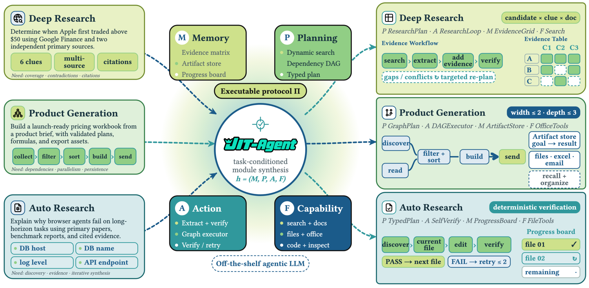
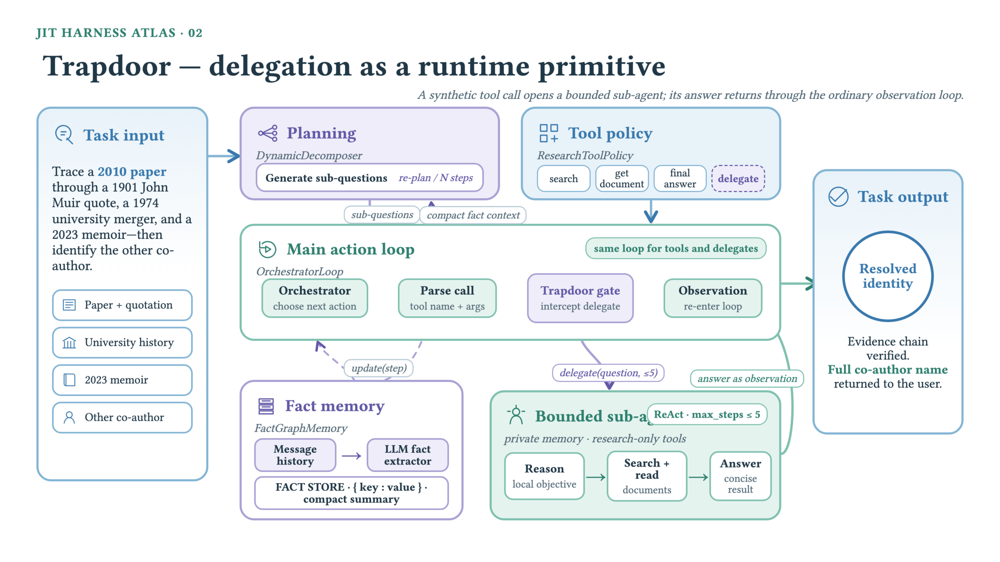

JIT-Agent: A Model Whose Output Is an Agent Harness
TL;DR
- "Scaling Harness Intelligence via Just-in-Time Harness Evolution" (arXiv 2608.25593, 26 August 2026; LV-NUS Lab, project lead Guibin Zhang, corresponding Wangchunshu Zhou and Shuicheng Yan) trains a 27B model whose output is an executable agent harness. You hand it a task, a protocol, and a tool registry; it emits memory, planning, action and capability-orchestration modules; an off-the-shelf agentic LLM then runs inside what it wrote.
- The bet it makes against everything else in this tracker's harness thread: existing work optimises a durable scaffold ahead of time against an experience stream and hopes it fits the next problem. JIT-Agent amortises that search into a generator and synthesises a fresh scaffold per task, then repairs it when it fails to execute and evolves an archive of prior designs from measured reward, latency and cost.
- The numbers are strong and the efficiency numbers are the interesting half. All 18 matched backbone–benchmark pairs improve (GLM-5.2 nine-benchmark average 74.1 → 81.8; DeepSeek-V4-Flash 66.7 → 75.5), and against five mature runtimes on a fixed backbone JIT-Agent has the lowest tokens and lowest cost in all six controlled settings — 36% cheaper per case on average — while winning on quality in four of six.
Why this matters
The harness thread in this tracker has been converging on one question: if agent capability is a property of the model–harness pair rather than the weights, how do you get a good harness? Meta-Harness, DarwinX, Living Harness and Harness-R1 all answer with a search: run trajectories, diagnose weaknesses, propose edits, keep what validates. The output is a better artifact — a scaffold you then deploy.
JIT-Agent's argument is that this whole framing is ahead-of-time in the compiler sense. You are precompiling a scaffold before you have seen the structure of the actual problem, and different problems genuinely want different structures: a wide search wants parallel evidence collection, a terminal task wants a lean serial loop, a deep-research question wants working memory over retrieved evidence, a repo-editing task wants the filesystem as its state. The right harness, the paper insists, is not merely domain-dependent but instance-dependent. So instead of searching for one artifact that generalises, train a model that produces the right artifact on demand — Model-as-a-Harness.
That is a real reframing, and it comes with a real risk the paper is honest about: a compact four-module protocol is nowhere near what Claude Code or Codex actually implement, and the paper's own "Position" note says the gap is deliberate. The claim is not that a model should write your production runtime. It is that even a compact harness, generated just in time, beats a mature general one on cost and often on quality — which, if it holds, makes harness synthesis a scaling axis rather than an engineering chore.
The core idea
Fix a protocol — a set of module schemas, interfaces, lifecycle rules and shared execution semantics. Every harness that complies with it factorises into exactly four parts:
- Memory decides what the model sees of the run so far.
- Planning turns that view into the next local directive.
- Capability orchestration decides which tools and skills are exposed for that directive.
- Action consumes all of it, updates the controller state, and emits the next call or the final answer.
At runtime they fire in the order memory → planning → capability → action, then the kernel executes the emitted call and appends the observation. The protocol is what makes generation tractable: the model is not writing an arbitrary agent program, it is filling four typed slots against a fixed contract.
To show the space is expressive rather than a toy, the authors re-implement 13 published scaffolds inside it — ReAct, Plan-and-Execute, ReSum, Flash-Searcher, GAM, MemoBrain, AggAgent, OAgent, AgentFold, HiAgent, DeepAgent, ROMA, AOrchestra — as a seed bank. In this vocabulary, plain ReAct is (full history, no planner, ReAct loop, full registry); a production coding runtime is the same action kernel with compacting memory and a todo-list planner; a recursive orchestrator is (isolated sub-problem contexts, decomposition planner, recursive execution, routed tools). The seed bank does double duty: it anchors the model's first training stage, and it becomes the archive the model later has to beat.

Figure 2 from the paper: one generator, three tasks, three structurally different harnesses. The protocol fixes the interfaces; what varies is the planning representation, the action topology, the persistent state, and which capabilities are exposed.
How it works
The loop in one sentence. For each task, the model reads the task plus a few prior harnesses, writes a harness, gets it validated, patches it if it fails, runs it, and — if the result beats what the archive already had — files it as a reference for next time. Everything else is detail about how the model was trained to do each of those steps well.
One harness, start to finish
The task is a multi-hop identity question from the deep-research set: trace a 2010 paper through a 1901 quotation, a 1974 university merger and a 2023 memoir, and name the other co-author. The paper calls the harness that gets generated Trapdoor.
Step 1 — What the generator is handed. Four things: the task description, the protocol contract, the registry of callable tools and skills available for this task, and a small set of previously successful harnesses retrieved from the archive as reference. Notably it is not handed any execution feedback from this task — nothing has run yet.
Step 2 — Read the task's shape, not its topic. The question's difficulty is that the evidence path is uncertain: you do not know in advance which clue resolves the identity. A rigid dependency graph would commit too early to one branch. That single observation determines the planner: sub-questions must be formed and revised as evidence lands, not fixed up front. Contrast the artifact-production task the paper shows alongside it, where the dependencies genuinely are known in advance — discover contacts, filter, normalise, build a workbook, email it — and the generated harness is a static graph executed with bounded width and depth.
Step 3 — Fill the four slots. Both harnesses obey the same contract and share zero structure:
| Slot | Trapdoor (uncertain evidence path) | Palimpsest (known dependencies) |
|---|---|---|
| Memory | key–value fact store distilled from history | artifact store indexing goals, evidence and outputs |
| Planning | dynamic decomposition, revised as evidence arrives | dependency graph compiled once from the request |
| Action | orchestrator loop that can open sub-agents | graph executor running ready nodes, bounded width and depth |
| Capability | research tools plus a synthesised delegate | file, spreadsheet and email tools |
Step 4 — Invent a capability that was not in the registry. Trapdoor's distinguishing move is to add a delegate action to the tool policy. Calling it opens a private sub-agent with its own memory, a research-only tool subset, and a hard budget of five steps. Recursive research becomes a runtime primitive — for this task specifically, because this task's uncertainty is resolved by branching.
Step 5 — Wire the delegate into the ordinary loop. The main loop intercepts the delegate call, runs the bounded sub-agent, and returns its answer as a plain observation. The parent does not learn a new control flow; from its point of view the sub-agent is a tool that happens to be an agent. This is what keeps the harness inside the protocol instead of becoming an unconstrained program.
Step 6 — Keep the parent's context from drowning. Sub-agents generate long traces, and inheriting them would defeat the purpose. So the memory module extracts compact key–value facts from the growing history and stores those. The parent integrates evidence across branches while never seeing a full sub-agent transcript — plausibly a large part of where the token savings in the results table come from (my inference; the paper attributes them generally to shorter, more selective execution).
Step 7 — Validate, repair, run, and decide whether to keep it. Before execution, a validator checks the harness against the protocol; a failure returns a structured diagnostic (compiler error, interface mismatch, tool-call failure) and the model gets a bounded number of attempts to patch it. Once it runs, the outcome is measured on three axes — task reward, latency, monetary cost — and the harness is filed into the archive only if it matches or exceeds the current reward frontier and strictly improves at least one of the three. Otherwise the archive is left alone. That retention rule is the entire self-evolution mechanism at inference time; the model's weights never change after deployment.

Figure 8 from the paper: Trapdoor. The delegate call is a synthetic capability the generator invented for this task; its answer re-enters through the ordinary observation path, so the recursion costs no new control flow.
The machinery behind steps 1–7
What is being generated. A harness is a four-tuple of modules, \(\mathbf{h}=(\mathbf{M},\mathbf{P},\mathbf{A},\mathbf{F})\), each drawn from its own protocol-compatible implementation space. At step \(t\) they compose as
\(\mathbf{M}\) is the memory module, \(\mathbf{P}\) planning, \(\mathbf{A}\) action, \(\mathbf{F}\) capability orchestration; \(\boldsymbol{\tau}\) is the task; \(\boldsymbol{\xi}_{<t}\) is the immutable event history before step \(t\); \(\mathbf{s}_t\) is the mutable controller state the harness carries forward; \(\mathbf{v}_t\) is the view memory constructs from that history; \(\mathbf{d}_t\) is the local directive planning produces; \(\mathcal{C}_\tau\) is the full capability registry for the task and \(\mathcal{C}_t\subseteq\mathcal{C}_\tau\) the subset exposed at this step; \(e_t\) is the emitted tool call or terminal output. A harness with no planner stays type-consistent by returning a null directive at every step — which is how plain ReAct fits the same contract.
What the model is trained to maximise. With \(p_\theta\) the generator, the objective across all three stages is
\(\mathcal{D}_{\mathrm{task}}\) is the training task distribution; \(\pi_\psi\) is a frozen executor sampled from a pool \(\mathcal{M}\) of off-the-shelf agentic LLMs — the point being that the harness must work for models the generator does not control; \(\mathbf{c}_\tau\) is the generation context (task, protocol, registry, retrieved reference harnesses); and \(U\) scores the resulting trajectory on task reward, latency and cost together. Stage I instantiates this with supervision from a stronger teacher plus a preference term; Stage II with repair trajectories built from generations that failed validation, keeping only those recoverable within two patches; Stage III online.
How "self-evolving" is actually implemented. Stage III samples a group of \(G\) candidate harnesses per task and compares them not to each other but to an incumbent — the best harness in the retrieved reference set, with statistics \((b_r,b_\ell,b_\kappa)\) for reward, latency and cost. Each candidate \(i\) earns three separate rewards:
\(r_i,\bar\ell_i,\bar\kappa_i\) are candidate \(i\)'s reward, mean latency and mean cost over repeated rollouts; \([x]_+ = \max(x,0)\); \(\mathbb{I}[\cdot]\) is 1 when the condition holds and 0 otherwise; \(\lambda_{\mathrm{evo}}\ge 0\) scales the overtaking bonus. Read the three together: the reward channel pays a bonus only for beating the incumbent, and the efficiency channels pay only if reward was preserved — you cannot buy speed with accuracy. The three are then normalised separately before being merged:
\(m\) ranges over the three channels; \(G\) is the group size; \(\varepsilon>0\) is a numerical stabiliser; the weights are non-negative, sum to one, and satisfy \(w_{\mathrm{rew}}>w_{\mathrm{lat}}+w_{\mathrm{cost}}\) so reward always dominates. The merged advantage is normalised once more across the batch and fed to a standard clipped policy update with a KL penalty toward the Stage-II checkpoint. The separate normalisation is the "group-decoupled" part of Evo-GDPO, and its purpose is mundane but important: latency in seconds and cost in dollars would otherwise swamp a reward in [0,1].
# JIT-Agent at inference (streaming mode)
for each arriving task tau_n:
E <- Retrieve(bank B_n, tau_n) # a few prior harnesses
c <- (tau_n, protocol, tool_registry, E)
candidates <- sample N harnesses from p_theta(. | c) # test-time scaling
h <- select one candidate
for k in 1..K_max: # bounded repair (2 rounds in training)
ok, diagnostic <- Validate(h, protocol, tau_n, executor)
if ok: break
h <- Apply(h, p_theta(patch | c, history of (h, diagnostic)))
xi <- Rollout(tau_n, frozen_executor, h, tool_registry)
m <- Eval(xi) # (reward, latency, cost)
if m matches/exceeds the reward frontier
and strictly improves reward OR latency OR cost:
B_{n+1} <- B_n + {(tau_n, h, m)} # else bank unchanged
# theta is frozen at deployment: all adaptation is in the bank
Caveats
The design space is deliberately small. The paper's own "Position" note concedes that Codex, Claude Code and comparable runtimes expose far richer mechanisms than four modules, and frames the compact space as a starting point — the result being defended is "even compact JIT harnesses help," not "a model should write your runtime."
Nothing is ablated. There is no experiment isolating Stage I from Stage II from Stage III, none isolating the protocol from the seed bank, and no numeric values are given for the Evo-GDPO weights, the overtaking bonus, the group size, or the KL coefficient — only the constraint that reward dominates. So the contribution of each training stage is unmeasured.
Two of six controlled settings lose on quality. Against fixed harnesses on a fixed backbone, JIT-Agent trails Claude Code by 3.1 points on one benchmark and NanoBot by 3.9 on another, in both cases at substantially lower cost. The paper reports these as a bounded quality–efficiency trade-off, which is fair, but "highest performance in four of six" is the accurate summary rather than a sweep.
The generalisation study runs on subsets. The 24 matched comparisons across six backbones use a 100-example subset for one benchmark and 50-example subsets for the other three — small enough that individual per-cell gains should be read as directional.
Results
- Same backbone, default scaffold replaced. All 18 matched pairs improve. GLM-5.2's nine-benchmark average rises 74.1 → 81.8 (+7.7); DeepSeek-V4-Flash's 66.7 → 75.5 (+8.8). Largest single gains are on tasks needing sustained state and constraint tracking: DeepSeek-V4-Flash +24.8 on DeepPlanning-Shopping (59.1 → 83.9), GLM-5.2 +20.2 on DeepPlanning-Travel (62.8 → 83.0). Search gains too: +11.9 xBench-DS and +8.9 DeepSearchQA for DeepSeek-V4-Flash.
- Open backbones beating closed frontier models. JIT-equipped systems take the top score in eight of nine benchmark columns; GLM-5.2 + JIT-Agent leads seven, reaching 93.9 on DeepSearchQA, 93.3 on PinchBench and 69.9 on AgentIF. DeepSeek-V4-Flash + JIT-Agent surpasses GPT-5.6 on DeepSearchQA (+9.1) and OdysseyBench (+4.3), and beats the larger DeepSeek-V4-Pro on every reported benchmark by 8.7 points on average. The one column it does not lead is DeepPlanning-Travel, 1.9 points behind GPT-5.6.
- Against real runtimes, backbone held fixed. Versus Claude Code, Codex, OpenCode, Hermes and NanoBot on DeepSeek-V4-Flash and Qwen3.6-Flash: JIT-Agent has the lowest tokens and lowest cost in all six settings, cutting per-case cost by 14.9–54.1% (mean 36.0%), and the best quality in four. The cleanest cell is xBench-DS on DeepSeek-V4-Flash: 527K → 212K tokens, $0.075 → $0.039, and score 78.0 → 82.0. No fixed harness dominates across tasks — NanoBot is strongest on one Qwen3.6-Flash benchmark and 14.8 points behind JIT-Agent on another, which is the paper's empirical case for generating per task rather than picking one scaffold globally.
- It is not buying accuracy with longer trajectories. The consistent leftward shift on the cost–performance frontier is the point: shorter, more selective execution.
- Transfer across model families. Across 24 matched backbone–benchmark comparisons spanning DeepSeek V4, Qwen 3.6 and Mimo V2.5 (Flash and Pro/Plus variants of each), the JIT harness beats ReAct every time, averaging +7.6 points — +10.2 for DeepSeek V4, +8.6 for Mimo, +4.0 for Qwen. DeepSearchQA shows the largest average gain at +15.2, including +22.2 for Mimo-V2.5-Pro.
- The archive earns its keep. Streaming inference — retrieving from and updating the harness bank as tasks arrive — finishes above static inference on all three task streams tested, with the advantage emerging as feedback accumulates and cost and tool-call trajectories staying broadly similar.
How it connects
- Meta-Harness — named in JIT-Agent's own comparison table as ahead-of-time search, and the sharpest contrast in this tracker. Meta-Harness dumps all prior code, scores and traces onto a filesystem and lets an editing agent search for a durable improvement; JIT-Agent trains a model to skip the search and emit the artifact. Same target, opposite computational strategy: pay once at training time versus pay every time at edit time.
- Harness-R1 — the closest prior work and the honest comparison. JIT-Agent's table credits Harness-R1 with a trained harness model, learned repair, and online evolution — the same three properties — and claims exactly one differentiator: instance-level synthesis versus test-time editing of a durable artifact. Whether that single axis is worth a new model is the question a Stage-ablation would have answered.
- Recursive Harness Self-Improvement and DarwinX — recursive harness improvement appears in JIT-Agent's table as test-time editing of an ahead-of-time artifact, and DarwinX belongs in the same row by the same taxonomy. Worth carrying into how you read them: they improve a scaffold, whereas JIT-Agent improves the ability to produce scaffolds, which is one level up and, if it holds, subsumes them.
- Rethinking Harness Evolution — the strongest reason to take this paper seriously. That critique's core worry is that harness gains are bought with tokens. JIT-Agent is the first result in this thread where the harness win comes with the lowest token count in every controlled cell, which is a much harder result to explain away as compute in disguise.
- RSI ceiling in 1,338 runs — the boundary condition, and a caution. That paper's experience scaffold moved HumanEval by 40.8 points and strategy revision by nothing. JIT-Agent is a scaffold generator, so on that evidence it should be expected to buy execution quality, which is exactly what the results show. Nothing here suggests a generated harness makes an agent reconsider its approach.
- Red Queen and Mendel Gödel Machine — the archive-search alternative to a trained generator. All three keep an archive of prior artifacts and a retention rule; RQGM and MGM search it with Thompson sampling and self-edits, JIT-Agent distils it into weights and retrieves from it. The frontier-retention rule here (keep only if the reward frontier is matched and one axis strictly improves) is a much simpler admission criterion than either Gödel machine's, and it would be interesting to see whether that simplicity costs anything.
- OEO self-evolving skills — the component-level analogue. JIT-Agent's own footnote positions it as the unification of the authors' earlier per-component work on evolving memory and evolving planning; the skills thread is the same move applied to the capability slot.
Critical take
This is the most convincing harness result in the tracker on efficiency and the least well-supported on mechanism. The efficiency case is genuinely hard to dismiss: lowest tokens and lowest cost in six of six controlled settings, against runtimes people actually use, with quality up in four of them. That is not the shape of a result you get by spending more compute. But almost nothing tells you why it works. There is no ablation — not of the three training stages, not of the protocol against the seed bank, not of static against streaming beyond one aggregate curve — and no hyperparameters for the Evo-GDPO machinery that the paper positions as its methodological contribution. It is entirely possible that Stage I alone, imitating a stronger teacher's harnesses, delivers most of the gain and that the repair and evolution stages are decoration; the paper gives you no way to tell. The controlled comparison also deserves a squint: Claude Code, Codex and OpenCode were built around specific frontier models and are here driving DeepSeek-V4-Flash and Qwen3.6-Flash, so "JIT-Agent beats Claude Code" means "beats Claude Code's scaffold running a model it was not tuned for" (my reading of the setup — the paper does not flag this, and it is the standard way such comparisons are run). Against that, the like-for-like ReAct comparison across six backbones is clean and the +7.6 average is the number I would quote. The qualitative section is the most persuasive part and the least quantified: Trapdoor inventing a bounded delegation primitive and Palimpsest compiling a dependency graph, from one generator under one contract, is a genuinely different artifact from a prompt tweak. Whether a 27B model reliably makes that call, or whether we are seeing the two best cases out of many, is unanswerable from what is reported.
If you remember three things
- Model-as-a-Harness is a real reframing. Every other system in this thread optimises a durable scaffold ahead of time and hopes it transfers. JIT-Agent amortises that search into a 27B generator that emits a fresh four-module harness per task — memory, planning, action, capability orchestration — and lets an arbitrary frozen backbone execute inside it.
- The efficiency result is the one that should change your priors. Against five mature runtimes with the backbone held fixed, JIT-generated harnesses use the fewest tokens and cost the least in every setting (36% cheaper per case on average) while winning on quality in four of six. Task-adaptive structure appears to buy shorter, more selective execution, not longer.
- The evolution is in the archive, not the weights. After deployment the generator is frozen; all adaptation happens through a bank of prior harnesses that admits a new entry only when it matches the reward frontier and strictly improves reward, latency or cost. Streaming inference beats static on every stream tested — and no ablation tells you how much of that the three-stage training actually contributed.